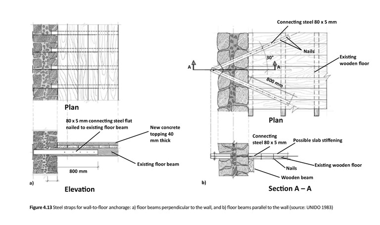
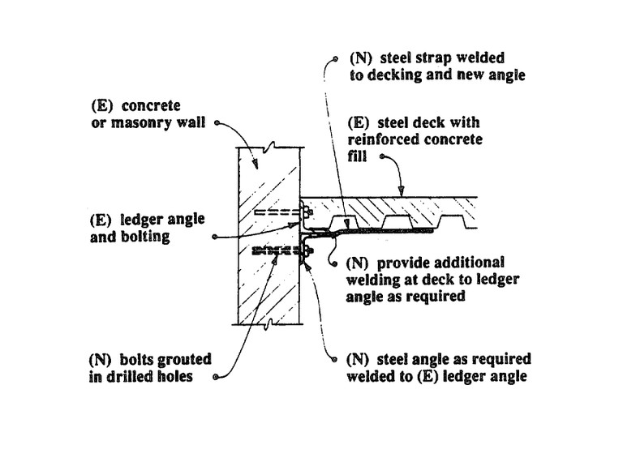
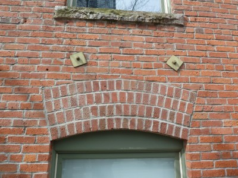

Floor-wall diaphragm connection present [FWCP]
There are connections between the floor diaphragm(s) and the walls, capable of transferring in-plane forces from roof to wall and restraining outward displacements of walls.

Examples of retrofit methods to improve strength of existing wall-to-floor connections in stone masonry buildings with wooden floors (Improving the Seismic Performance of Stone Masonry Buildings, Bothara and Brzev, EERI, 2011)

Examples of retrofit methods to improve strength of wall-to-floor connections in stone masonry buildings with reinforced concrete floors (Improving the Seismic Performance of Stone Masonry Buildings, Bothara and Brzev, EERI, 2011)

Example of retrofit method to improve strength of wall-to-floor connections of a wood diaphragm - note: N refers to New and E refers to Existing components (FEMA 172, 1992)

Example of retrofit method to improve strength of wall-to-floor connections of a composite concrete slab and steel deck diaphragm to a concrete or masonry wall; note: N refers to New and E refers to Existing components (FEMA 172, 1992)


A retrofitted unreinforced brick masonry building with floor-wall anchors visible at the exterior, Vancouver, Canada (S. Brzev)
A retrofitted unreinforced brick masonry building showing exposed floor-wall and roof-wall anchors at the exterior, Seattle, USA (S. Brzev)

A typical wall anchor, consisting of a steel rod and an exterior steel plate exposed at the exterior; note that anchor plates are of different shapes and sizes (S. Brzev)